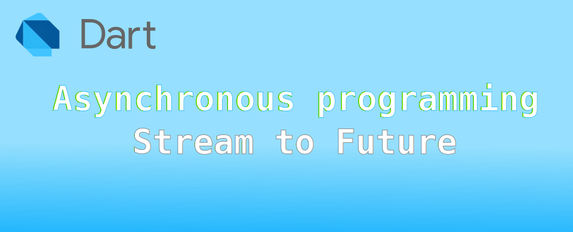

Dart: เขียนฟังก์ชั่น asynchronous เพื่อคืนค่า Future จากผลของ Stream

เนื่องจากการทำงานแบบ asynchronous นั้นแทบจะเป็นการทำงานหลักของโปรแกรมสมัยใหม่ รวมถึง Dart และ Flutter ด้วย แต่ด้วยความเปิดกว้างของผู้ออกแบบภาษา ทำให้โปรแกรมเมอร์สามารถสร้างฟังก์ชั่นเพื่อคืนค่าเป็น Future และ Stream ได้หลายรูปแบบมาก เมื่อลองดูตัวอย่างใน Stack Overflow แล้วพบว่ามีตั้งแต่ระดับพื้น ๆ จนถึงจินตนาการไม่ถึงเลยทีเดียว
Note ตัวนี้เลยเขียนเอาไว้เป็นตัวอย่างเผื่อกลับมาดูเป็นตอนนึกไม่ออก
เขียนกันแบบพื้น ๆ
ในตัวอย่างที่เจอ และน่าสนใจและใช้กันบ่อย ๆ คือ การอ่านรายชื่อไฟล์และโฟลเดอร์ ใน dart:io มีคำสั่ง Directory.list() มาให้ใช้อยู่แล้ว โดยคืนค่าเป็น Stream ถ้าเขียนแบบง่าย ๆ เรียงลำดับเป็น synchronous ก็ใช้ await for ช่วย แต่ในตัวอย่างนี้จะเพิ่มเงื่อนไขว่า จะเอาแต่ไฟล์เท่านั้น ไม่เอาโฟลเดอร์ จะเห็นว่ามีคำสั่ง if (file is File) เพื่อเลือกเฉพาะไฟล์มาใช้
Future<List<String>> dirFiles(Directory dir) async {
List<String> files = <String>[];
Stream<FileSystemEntity> lister = dir.list(recursive: false);
await for (FileSystemEntity file in lister) {
if (file is File) files.add(file.path);
}
return files;
}
void main(List<String> arguments) {
test_playground.dirFiles(Directory(r"D:\My Data")).then((listOfFile) {
print(listOfFile.join('\n'));
});
print('end of main');
}
ผลการทำงาน จะแสดงรายการไฟล์ในโฟลเดอร์ D:\My Data ออกมาที่หน้าจอ
end of main
D:\My Data\Add new folder.vbs
D:\My Data\Clear old files.vbs
D:\My Data\desktop.ini
D:\My Data\FileSyncSettings.ffs_gui
D:\My Data\sync.ffs_db
แล้วถ้าไม่ใช่ await for แต่ใช้ await แทนได้ไหม ก็ได้นะ แต่ก็จะแปลก ๆ ว่าทำไปทำไม 😅 ทำโดยการแปลง StreamSubscription เป็น Future แทน
Future<List<String>> dirFiles(Directory dir) async {
List<String> files = [];
Stream<FileSystemEntity> lister = dir.list(recursive: false);
await lister.listen((file) {
if (file is File) files.add(file.path);
}).asFuture();
return files;
}
ข้างล่างนี่เหมือนข้างบน แต่แตกบรรทัดให้เห็นชัดเจนขึ้น
Future<List<String>> dirFiles(Directory dir) async {
List<String> files = [];
Stream<FileSystemEntity> lister = dir.list(recursive: false);
StreamSubscription<FileSystemEntity> listener = lister.listen((file) {
if (file is File) files.add(file.path);
});
await listener.asFuture();
return files;
}
ลองแบบไม่ใช่ async แล้วใช้คำสั่งกลุ่ม Iterable ของ Stream แทน
ตัว Stream จะสามารถใช้คำสั่งแบบ Iterable ได้ และเมื่อทำงานเสร็จจะคืนค่ามาเป็น Future ดังนั้นใช้ forEach() เพื่อเลือกเฉพาะไฟล์ และเมื่อเสร็จแล้วจะคืนค่าเป็น Future<void> ก็ใช้ .then() เพื่อคืนค่า files กลับไปเมื่อทำงานเสร็จ
Future<List<String>> dirFiles(Directory dir) {
Stream<FileSystemEntity> lister = dir.list(recursive: false);
List<String> files = [];
return lister.forEach((file) {
if (file is File) files.add(file.path);
}).then((_) => files);
}
เนื่องจาก forEach() มีประสิทธิภาพต่ำ เหมาะกับงานที่ทำมีขนาดเล็ก หรือการใช้ forEach() ทำให้อ่านง่ายกว่า และจำนวนข้อมูลที่ทำงานด้วยมีจำนวนน้อย นอกเหนือจากนี้แนะนำว่าใช้ await for แทน เพราะประสิทธิภาพดีกว่ามาก
ใช้ Completer()
ตัว Completer จะเป็น Object ที่ช่วยให้สร้าง Future Object และเปลี่ยนสถานะของ Future เป็น completed ได้ตามต้องการ การใช้งานคือสร้าง Completer ที่เก็บข้อมูลตามที่ต้องการ (ในที่นี้คือ List<String>) เมื่อทำงาน asynchronous เสร็จแล้วให้ใช้คำสั่ง Completer.complete(files) เพื่อให้โปรแกรมที่รออยู่ทราบว่า completed แล้วเอาข้อมูลไปใช้งานต่อไป
Future<List<String>> dirFiles(Directory dir) {
var files = <String>[];
var completer = Completer<List<String>>();
var lister = dir.list(recursive: false);
lister.listen((file) {
if (file is File) files.add(file.path);
}, onDone: () => completer.complete(files));
return completer.future;
}
จาก คำแนะนำในการเขียนโปรแกรมให้มีประสิทธิภาพ ไม่แนะนำให้ใช้ Completer ในงานที่สามารถใช้คำสั่งใน Future หรือ Stream ได้อยู่แล้ว เนื่องจากในการดูแลรักษาโปรแกรม ตัว Future Object จะมีความชัดเจนกว่า และจัดการเรื่อง error ง่ายกว่า
เมื่อไหร่ควรใช้ Completer
- new asynchronous primitives นั้นคือสามารถนำ Completer มาใช้งานใน
- interfacing with asynchronous code that doesn't use futures
- Callback-based API หรือ Database query ที่ไม่ได้ออกแบบมาเพื่อรองรับ Future
- asynchronous code ที่มีความซับซ้อน
ข้อควรทราบ
asyncเป็นการบอกว่าจะเขียนงาน asynchronous ให้เหมือนรูปแบบ synchronous โดยการใช้await/await forแต่ถ้าสุดท้ายไม่ได้ใช้ ก็ให้เอาasyncออกจากการประกาศของฟังก์ชั่น- หากฟังก์ชั่นไหนที่สามารถใช้
await/await forได้ ก็ให้ใช้ เนื่องจากจะกลับมาแก้ไข code ได้ง่ายกว่าการใช้งาน.then()หรือ.listen() - การดักจับ Exception ด้วย try-catch กับฟังก์ชั่นที่เป็น asynchronous ต้องเขียนเป็น synchronous ด้วย await